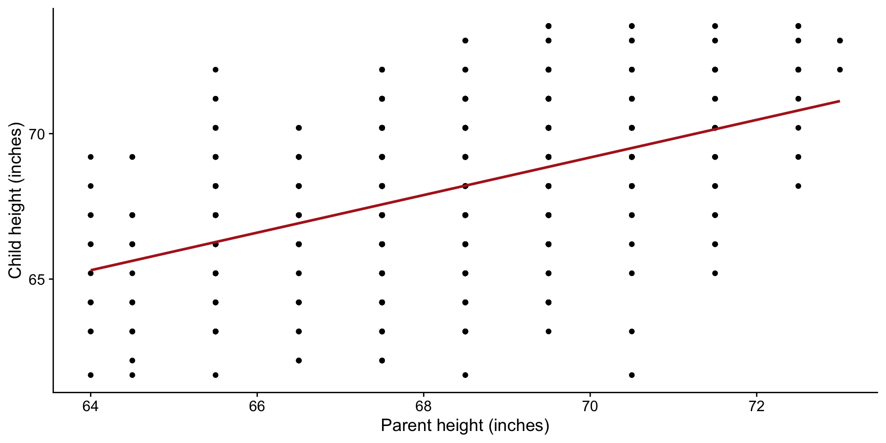
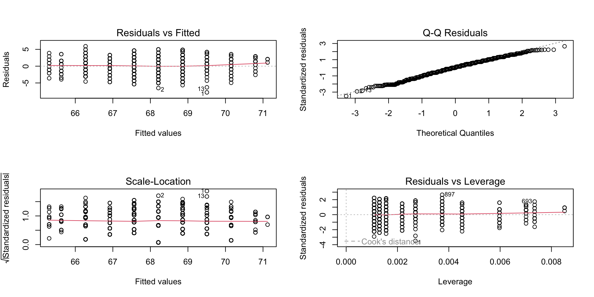
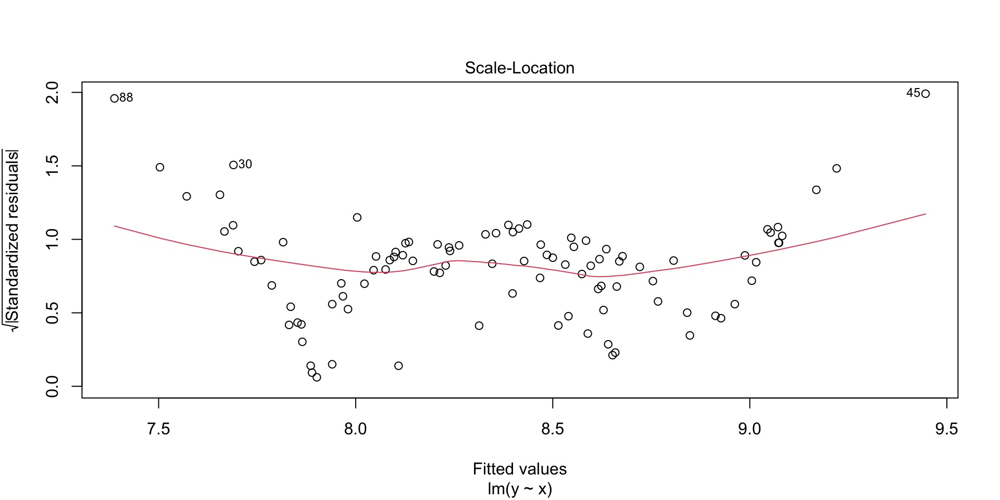

Correlation r: a measure of the strength and direction of the linear relationship between two variables
Is there a causal relationship between two variables?
No: use correlation analysis
Yes: use regression analysis
Simple linear regression modelling
Y_i = \beta_0 + \beta_1 x_i + \epsilon_i
Basically, a deterministic straight line equation y=c+mx, with added random variation that is normally distributed
Y = c + mx + \epsilon
Fitting the line
Y_i = \beta_0 + \beta_1 x_i + \epsilon_i
Y = c + mx + \epsilon
How do we fit a line to data if data are “noisy”?
Code
x <-1:10y <-2*x +rnorm(10, 0, 2)# generate y with predicted valuesy_pred <-2*xdf <-data.frame(x, y)p1 <-ggplot(df, aes(x, y_pred)) +geom_point(size =2) +geom_smooth(method ="lm", se =FALSE, color ="firebrick") +labs(x ="x", y ="y", title ="A")p2 <-ggplot(df, aes(x, y)) +geom_point(size =2) +geom_smooth(method ="lm", se =FALSE, color ="royalblue") +labs(x ="x", y ="y", title ="B (How do we fit this?)")library(patchwork)p1 + p2 +plot_layout(ncol =2)
Least squares
The method of least squares is the automobile of modern statistical analysis: despite its limitations, ocassional accidents and incidental pollution, it and its numerous variations, extensions, and related conveyances carry the bulk of statistical analyses, and are known and valued by nearly all.
– Stigler, 1981 (emphasis added)
Usage
Student’s t-test
linear regression
ANOVA
logistic regression
nonlinear regression
ridge regression
lasso regression
principle component analysis
generalised linear model
etc…
History
January 1, 1801: Italian astronomer Giuseppe Piazzi discovers Ceres, the first and largest asteroid/dwarf planet.
The problem: Big enough to track (40 days), but disappears behind the sun for a period of time.
Source: DALL-E2 image. “Ceres the asteroid moving between the earth and the sun.”
Carl Friedrich Gauss was able to predict the location of Ceres by developing a technique of least squares approximation using just 3 observations (out of 22).
The most accurate prediction of Ceres’ location at the time.
The first published evidence of least squares was in 1809, however, by Adrien-Marie Legendre
Sir Francis Galton (1822-1911) was the first to apply least squares to the analysis of bivariate relationships: first use of the term “regression” in 1886.
Example: Galton’s data
Galton’s data on the heights of parents and their children
Is there a relationship between the heights of parents and their children?
Code
library(HistData)data(Galton)fit <-lm(child ~ parent, data = Galton)ggplot(Galton, aes(x = parent, y = child)) +geom_point() +geom_smooth(method ="lm", se =FALSE, color ="firebrick") +labs(x ="Parent height (inches)", y ="Child height (inches)")

How did we end up with the line in the plot above?
# Calculate slope from dfbeta1 <-sum((df$x -mean(df$x)) * (df$y -mean(df$y))) /sum((df$x -mean(df$x))^2)# beta0 <- mean(df$y) - beta1 * mean(df$x)p1 +geom_smooth(method ="lm", se =FALSE, color ="firebrick", linetype =2) +# label the lineannotate("text", x =15, y =65, size =7, label =expression(beta[1]), colour ="firebrick")
Intercept
\beta_0 = \bar{y} - \beta_1 \bar{x}
Code
# calculate mean y from dfybar <-mean(df$y)xbar <-mean(df$x)beta0 <- ybar - beta1 * xbarp1 +geom_vline(xintercept = xbar, linetype ="dashed", color ="slateblue") +geom_hline(yintercept = ybar, linetype ="dashed", color ="slateblue") +# label the linesannotate("text", x =25, y = ybar*0.8, size =7, label =expression(bar(y)), colour ="slateblue") +annotate("text", x = xbar*1.05, y =150, size =7, label =expression(bar(x)), colour ="slateblue") +geom_smooth(method ="lm", se =FALSE, color ="firebrick", linetype =2) +# extend the geom_smooth line to intercept x=0geom_segment(aes(x = xbar, y = ybar, xend =0, yend = beta0), color ="firebrick", linetype =2) +# label the slope lineannotate("text", x =15, y =65, size =7, label =expression(beta[1]), colour ="firebrick") +# add a dot at the interceptgeom_point(aes(x =0, y = beta0), color ="seagreen", size =3) +# label the interceptannotate("text", x =0, y = beta0 *1.4, size =7, label =expression(beta[0]), colour ="seagreen")
It’s a lot easier in R…
Fitting a linear model in R
Is there a relationship between the heights of parents and their children?
The data must meet certain criteria, which we often call assumptions. They can be remembered using LINE:
Linearity. The relationship between y and x is linear.
Independence. The errors \epsilon are independent.
Normal. The errors \epsilon are normally distributed.
Equal Variance. At each value of x, the variance of y is the same i.e. homoskedasticity, or constant variance.
Tip
All but the independence assumption can be assessed using diagnostic plots.
Assumptions: Why do we care?
If the assumptions are met, then we can be confident that the model is a good representation of the data.
If they are not met, the results are still presented, but our interpretation of the model is likely to be flawed.
Warning
R will not warn you if the assumptions are not met. It is up to you to check them!
How do we check the assumptions?
Recall that the linear model is a deterministic straight line equationy = c + mx plus some random noise\epsilon:
Y_i = \beta_0 + \beta_1 x + \epsilon
If the only source of variation in y is \epsilon, then we can check our assumptions by just looking at the residuals \hat{\epsilon}.
How do we get the residuals?
Fit the model…
Residuals need to be calculated from the model, not from the raw data.
In R, these values are stored automatically.
Another way to look at residuals
Once you have fitted the line, it does not change. The residuals are the vertical distances between the points (not shown) and the line.
Checking assumptions
1-step
par(mfrow =c(2,2)) # need to do this to get 4 plots on one pageplot(fit)

Residuals vs fitted: check for linearity, equal variance.
Q-Q residuals: check for normality.
Scale-location: check for equal variance (standardised).
Residuals vs leverage: check for outliers (influential points).
Assumption: Linearity
Residuals vs. fitted plot looks at the relationship between the residuals and the fitted values.
If the relationship is linear:
Residuals should be randomly scattered around the horizontal axis.
The red line should be reasonably straight.
plot(fit, which =1)
Assumption: Normality
Q-Q plot looks at the distribution of the residuals, like a histogram, but “cleaner”.
Sometimes, a histogram is still useful to see the shape of the distribution.
par(mfrow =c(1,2))plot(fit, which =2)hist(rstandard(fit))
Assumption: Normality
If normally distributed, the points should follow the red line.
Deviation from the red line is common in the tails, but not in the middle.
Tips
Light-tailed: small variance in residuals, resulting in a narrow distribution
Heavy-tailed: many extreme positive and negative residuals, resulting in a wide distribution
Left-skewed (n shape): more data falls to the left of the mean
Right-skewed (u shape): more data falls to the right of the mean
Code
set.seed(915)x <-rnorm(100)y <-2+5* x +rchisq(100, df =2)df <-data.frame(x, y)fit_eg <-lm(y ~ x, data = df)par(mfrow =c(1,2))plot(fit_eg, which =2)hist(rstandard(fit_eg))
Code
set.seed(1028)x <-rnorm(100)y <-2+5* x +rchisq(100, df =3) *-1df <-data.frame(x, y)fit_eg <-lm(y ~ x, data = df)par(mfrow =c(1,2))plot(fit_eg, which =2)hist(rstandard(fit_eg))
Code
set.seed(1028)x <-rnorm(100)y <-2+5* x +rnbinom(100, 10, .5)df <-data.frame(x, y)fit_eg <-lm(y ~ x, data = df)par(mfrow =c(1,2))plot(fit_eg, which =2)hist(rstandard(fit_eg))
Assumption: Equal variances
If variances are equal, the points should be randomly scattered around the horizontal axis.
The red line should be more or less horizontal.
plot(fit, which =3)
Assumption: Equal variances
If variances are not equal we may see:
A funnel shape, where the points are more spread out at the ends than in the middle. Sometimes also called “fanning”.
Patterns in the scale-location plot, such as a curve or a wave, indicating that the variance is changing.
Look at the red line for a general trend, but don’t depend on it too much.
Code
set.seed(915)x <-rnorm(100)y <-2+5* x^2+rchisq(100, df =2)df <-data.frame(x, y)fit_eg <-lm(y ~ x, data = df)plot(fit_eg, which =3)

Outliers
Leverage is a measure of how far away the predictor variable is from the mean of the predictor variable.
The Residuals vs Leverage plot shows the relationship between the residuals and the leverage of each point.
Cook’s distance is a measure of how much the model would change if a point was removed.
In general, points with high leverage and high Cook’s distance are considered outliers.
plot(fit, which =5)
Code
set.seed(1028)x <-rnorm(100)y <-2+5* x +rnbinom(100, 10, .5)y[60] <- y[60] +30df <-data.frame(x, y)# Add an outlierfit_eg <-lm(y ~ x, data = df)plot(fit_eg, which =5)
We don’t want points to exceed the dashed line (which appears once they approach the Cook’s distance), because that means they are likely to influence the model greatly.
Handling violations
What can we do?
Depends on the violation and the type of data i.e. circumstances.
If data is non-linear, try a transformation of the response variable y, from light to extreme:
root: \sqrt{y} or \sqrt{y+1} if y contains zeros
log: \log(y) or \log(y+1) if y contains zeros
inverse: \frac{1}{y} or \frac{1}{y+1} if y contains zeros
If data is not normally distributed, try a transformation of the response variable y first, otherwise transform the predictor variable x. Both can be done at the same time.
If equal variances assumption is violated, same as above.
If outliers are present, try removing them, or transforming the response variable y.
What if that doesn’t work?
If the assumptions are still violated after trying the above, you can try:
Using a different model e.g. generalized linear model.
Using a different type of regression e.g. logistic regression.
Using a non-parametric test.
Model assumptions validated. Now what?
Inference
What can we say about the model based on our data?
What can we understand about the relationship between child and parent?